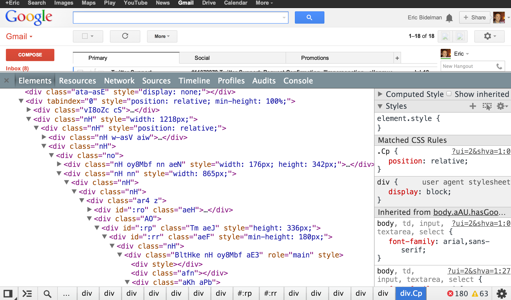
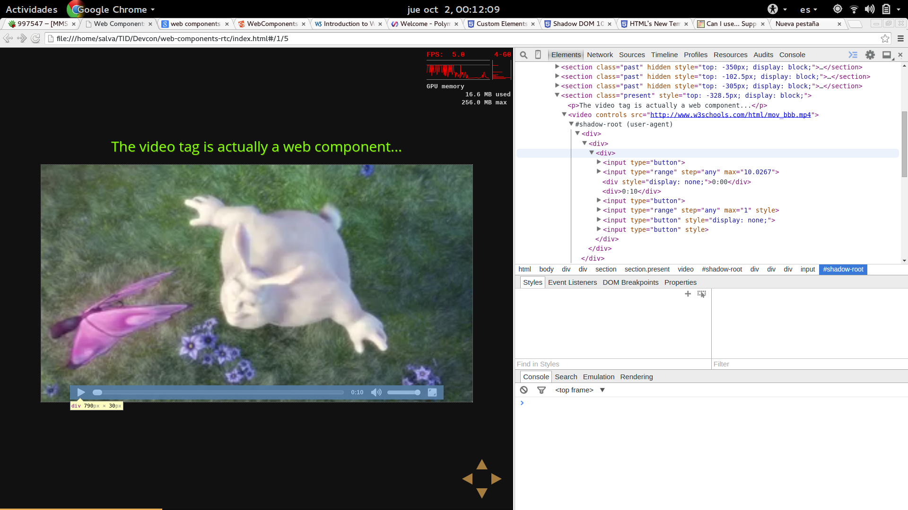
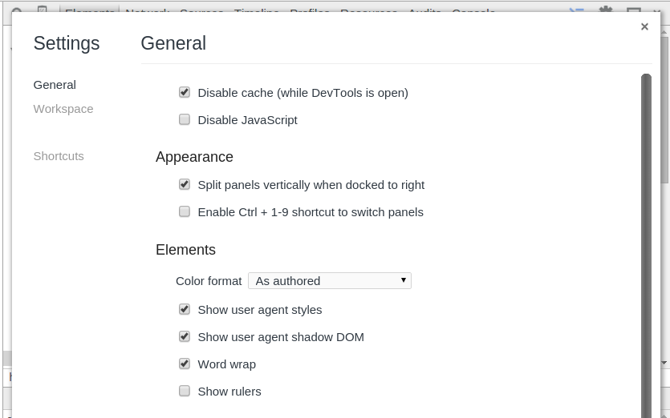

WebRTC & Web Components
The future Web
What is WebRTC?
How it Works?
In a nutshell, TURN, STUN and ICE allow to discover real addresses in internal networks. In other words, where to send data.
Channels
And what about Web Components?
Web Components are extensions to HTML elements.
They are semantically-rich fragments of markup with specific behaviour.
Let's take a look to the code of Google Hangouts
A little bit messy, isn't it?
What if we could turn that bunch of div into
something more expressive?
<hangout-module>
<hangout-chat from="Paul, Addy">
<hangout-discussion>
<hangout-message from="Paul" profile="profile.png"
profile="118075919496626375791" datetime="2013-07-17T12:02">
<p>Feelin' this Web Components thing.</p>
<p>Heard of it?</p>
</hangout-message>
</hangout-discussion>
</hangout-chat>
<hangout-chat>...</hangout-chat>
</hangout-module>Much better
What is needed to build Web Components?
In a nutshell, tou build web components you need:
- A name to use inside the markup.
- Composition to build your new component from native HTML elements.
- Encapsulation to keep your custom markup separated from the user markup.
- Custom behavior for carrying with the new element duties.
Register Element
The document's method document.registerElement()
waits for a dashed name for a custom element and create a new
HTML element.
If you do...
document.registerElement('x-tasklist');
document.registerElement('x-task');
...now you can do:
<x-tasklist>
<x-task>Learn about Web Components</x-task>
<x-task>Learn about WebRTC</x-task>
</x-tasklist>Live demo:
The Shadow DOM
The shadow DOM is how web components allow composition.
The shadow DOM is a special DOM root living inside another HTML5 element.
The inner DOM is totally isolated from the outer DOM so, for
instance, an id used in the outer DOM can be used
again inside the inner DOM.
The video tag is actually a Web Component...
Currently only Google Chrome is supporting Web Components completely but you can see a screenshot here of how it looks like...
Just rememeber to enable the proper options!
You can create a shadow root inside any element:
var tl = document.querySelector('#my-task-list');
var shadowRoot = tl.createShadowRoot();
shadowRoot.innerHTML = '<strong>Inside the shadow DOM</strong>';Live demo:
The template tag
The template element allows to
declare encapsulated markup, style and
behavior.
Here is how it looks:
<template id="tasklist-template">
<style>
ul {
list-style: none;
background-color: yellow;
border-radius: 0 25% 25% 25%;
box-shadow: 2px 2px 2px 0 black;
}
ul li {
display: block;
}
ul li.done {
text-decoration: line-through;
}
</style>
<ul>
<li></li>
</ul>
</template>And here how it works.
You see nothing...?
Try with the sourcecode.
Element lifecycle
Customize the behavior is got by defining a lifecycle. For each stage of the lifecycle, there is a callback to customize what happens.
The callbacks are:
createdCallback(), called when an element is created.attachedCallback(), called when an element is added to the document.detachedCallback(), called when an element is removed from the document.attributeChangedCallback(attrName, oldValue, newValue), called when an property is set for the element.
Now, we can do:
var taskListPrototype = Object.create(HTMLElement.prototype);
taskListPrototype.createdCallback = function () {
// Get the template and empty the list
var template = document.querySelector('#tasklist-template');
var clone = document.importNode(template.content, true);
var list = clone.querySelector('ul');
list.innerHTML = '';
// Fill the list with the same items as task-items
var items = [].slice.call(this.querySelectorAll('task-item'), 0);
items.forEach(function (taskItem) {
var li = document.createElement('li');
li.textContent = taskItem.textContent;
// Check for initial state
if (taskItem.getAttribute('done') !== null) {
li.classList.add('done');
}
// Link the list item with the task item
taskItem._li = li;
// When clicking on the list item, toggle attribute done on
// the task item.
li.onclick = function () {
if (taskItem.getAttribute('done') !== null) {
taskItem.removeAttribute('done');
}
else {
taskItem.setAttribute('done', true);
}
};
// Add the list item to the list
list.appendChild(li);
});
// Create the shadow root with these contents
this.createShadowRoot().appendChild(clone);
};
var taskItemPrototype = Object.create(HTMLElement.prototype);
// On attached, refresh the parent task list
taskItemPrototype.attachedCallback = function () {
if (this.parentNode.tagName !== 'TASK-LIST') { return; }
this.parentNode.createdCallback();
};
// Check for done
taskItemPrototype.attributeChangedCallback =
function (attr, oldValue, newValue) {
if (attr !== 'done') return;
if (newValue !== null) {
this._li.classList.add('done');
}
else {
this._li.classList.remove('done');
}
};
var TaskList = document.registerElement('task-list', {
prototype: taskListPrototype
});
var TaskItem = document.registerElement('task-item', {
prototype: taskItemPrototype
});Result:
Take a look at the sources to see the simplicity of the final markup. This demo is mainly based on Custom Elements from HTML Rocks
About me

- me
- Salvador de la Puente González
- @salvadelapuente
- My web sites
- http://unoyunodiez.com
http://github.com/delapuente